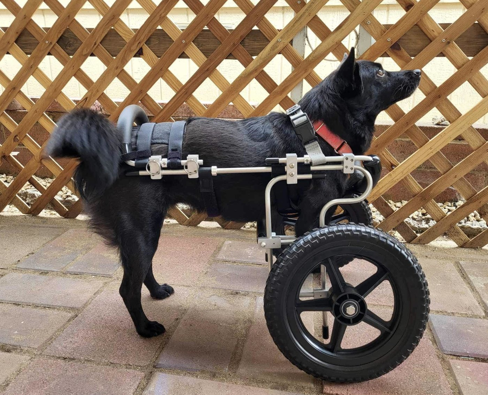
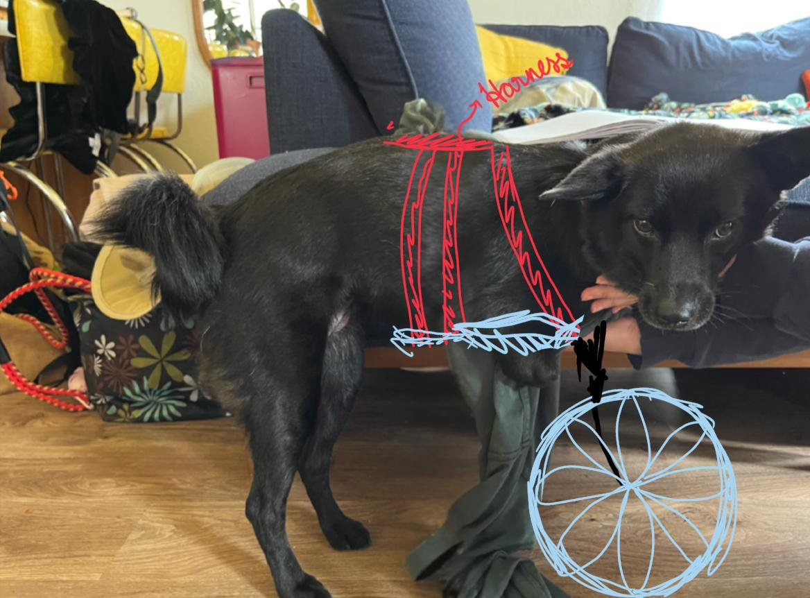
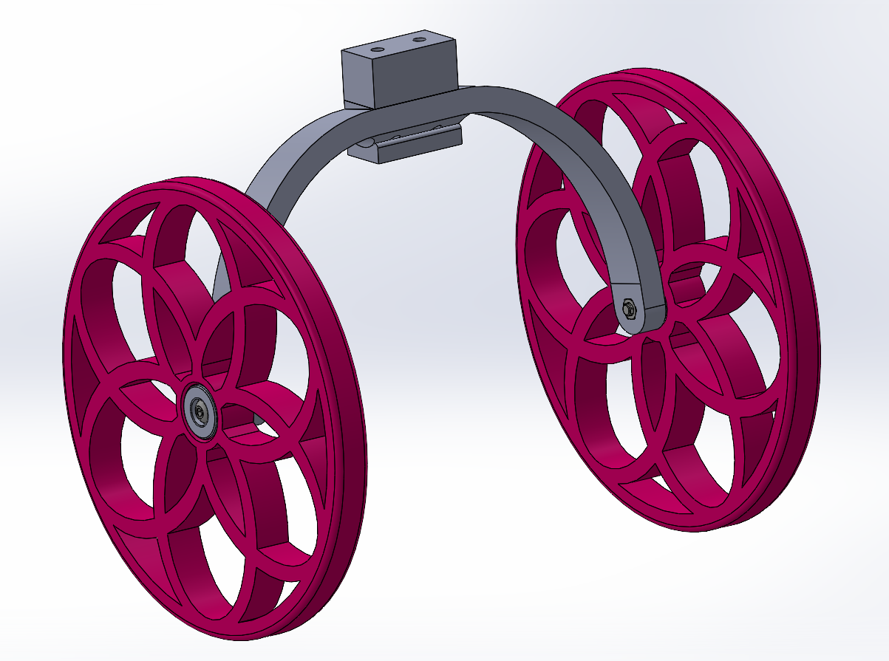

Kiki Case Study¶
- Age: 5
- Weight: 25-30 lbs
- Prosthetic: Wheelchair, both front limbs
- Amputation: Left front full, with very little nub; right front amputated just below the elbow
- Reason: Caught in a bear trap as a stray in Taiwan
- Goals: Walking and running
Kiki's current wheelchair, from Eddie's Wheels, is quite wide, with large wheels that slant outward, so it works well only on fairly flat surfaces and in big, open areas. She gets nervous on narrow paths, won't walk on sidewalks, and never learned to walk well on a leash. Kiki loves to run fast, though she often falls on her face, and with the wheels up in the air she has no way to right herself. Her favorite things are digging in the dirt with her mouth and rolling all over the ground, and she particularly loves sand, which cushions her joints.
Brief Summary of Animal Goals¶
Kiki had both front limbs amputated, with one slight residual limb and another that was completely amputated. The owner's request was to improve upon the current wheelchair design, which is clunky and inhibiting.

Kiki currently uses her longer (right) nub to walk and balance without a wheelchair, resulting in a slanted, non-ideal posture. The new wheelchair should enhance her ability to walk and run, especially on non-paved terrain. It must be comfortable but durable, prevent her from faceplanting, and support high speeds and high impact.
Materials¶
- Frame: TPU — Flexible, so the frame can move with Kiki.
- Fork: PETG (use CF Nylon with inlaid continuous fiber on the Markforged if possible) — Strong, durable, and impact resistant.
- Wheels: TPU — High impact resistance, with variable rigidity and compressibility set by infill density:
- Rim section: high infill density for a strong, rigid structure.
- Tire section: low infill density for squishiness to absorb impacts.

3D-Print Files¶
STL Files — The folder contains STL files of the parts in their current state. Use the CAD files for editing and the most recent version.
Iteration in Design Process and Challenges Faced¶
- Dimensioning — Attempts to dimension the parts from physical images with manual measurements (measuring tapes) were slightly inconsistent with the dog's actual dimensions due to parallax, which impaired the fit and comfort of the initial design.
- Shock absorber — A shock absorber was originally ideated to interface between the frame and the fork to reduce impulse, especially on hard surfaces at high speeds. This was later replaced by printing the wheel spokes with slightly more give (lowered infill and a different infill pattern) to reduce design complexity and the chance of failure.
- Wheel size — Wheel sizing was difficult to calculate given Kiki's inability to stand up straight without support. An in-person fitting session provided quality insight on lowering the wheel diameter relative to her current wheelchair.
- Padding offset — The initial frame design tried to account for a slight sizing offset due to planned padding (positive offset), but this made the design slightly oversized.
- Rigidity — The nTop workflow created a slightly rigid and sharp design based on the lidar scan. After printing the initial prototype, this was adjusted for more smoothness by scattering bone placements in the workflow to round the inside of the frame.
Assembly of Full Design¶
CAD Files
- A folder contains all CAD files for the project, including a top-level assembly.
- All CAD files are
.SLDPRTfiles. - Many, if not all, SolidWorks files are parametric, allowing dimensions to be changed easily to get the right fitment.

Referenced Papers/Sources¶
- M. A. Bond, "The effect of a specialized reading program on the reading achievement of second-grade students," Ph.D. dissertation, Dept. Curriculum and Instruction, Univ. of Mississippi, Oxford, MS, USA, 1990. Available: ProQuest Dissertations & Theses Global.
- T. B. (TrevorB1), "Small front leg dog wheelchair," Instructables, 2014.
- C. Jackson, C. Anderson, T. Wagner, and M. McAlester, "Final project report: Specialized dog wheelchair," Engineering Senior Design Reports, Trinity Univ., San Antonio, TX, USA, Rep. 103, 2025.
- S. Yang et al., "Clinical application of 3D printing technology in the production of canine full limb prosthetics," Veterinary Medicine International, vol. 2025, Art. no. 9052033, 2025, doi:10.1155/vmi/9052033.
- K. B. M. de Oliveira and L. da S. Gomes, "Ergonomic wheelchair for paraplegic dogs with resting mechanism," Journal of Civil Engineering Research & Technology, vol. 6, Art. no. JCERT-173, 2024, doi:10.47363/JCERT/2024(6)166.
Team¶
- Ramzi HreishRole
- Ian PoeRole
- Harshini JayaprakashRole
- Phillip YeRole
- Kylie PeleRole
- Simran KeertipatiRole